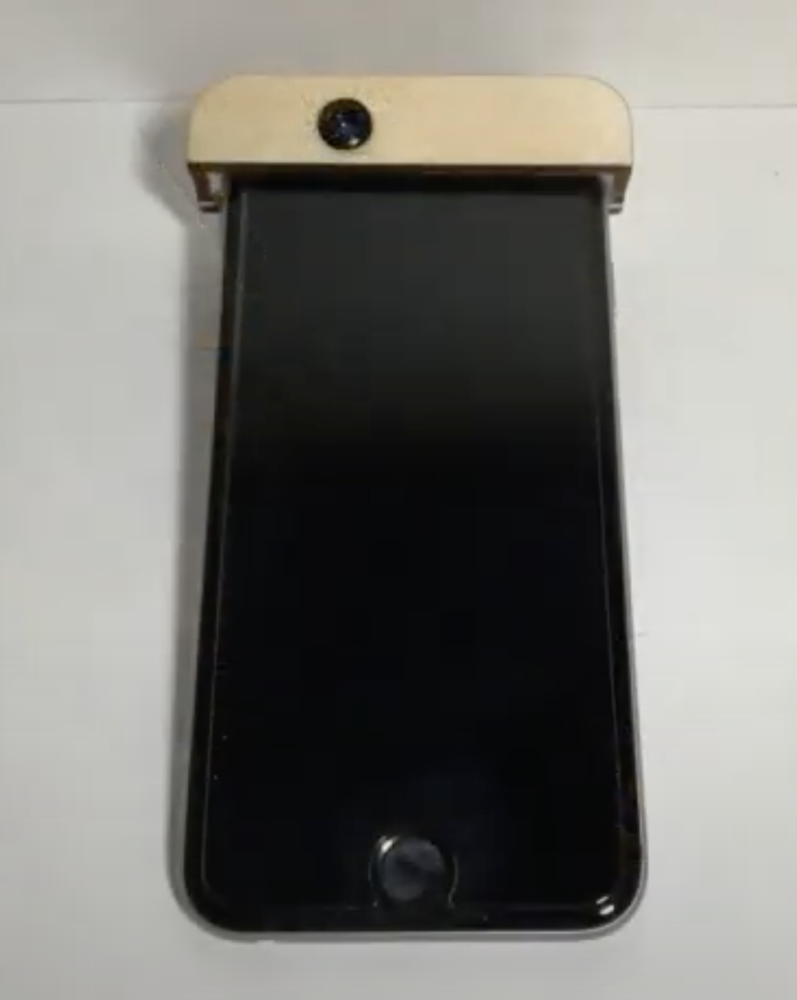
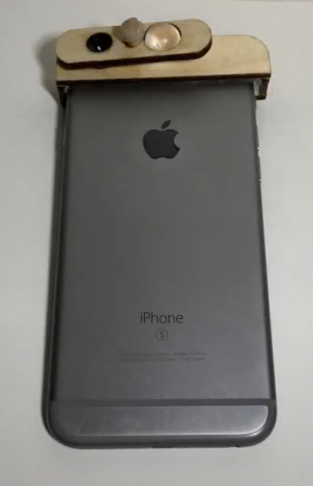
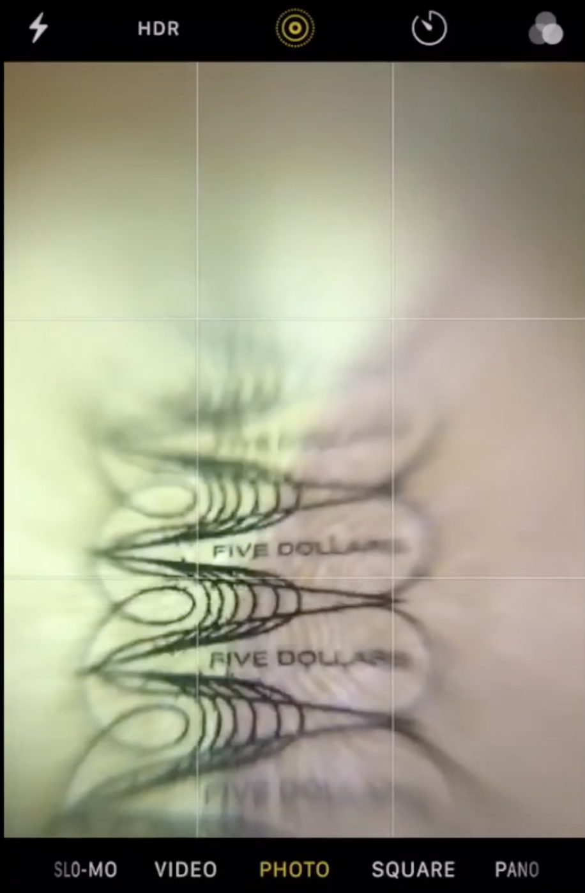
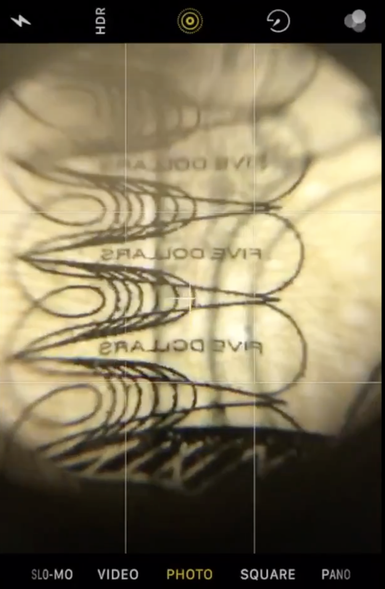
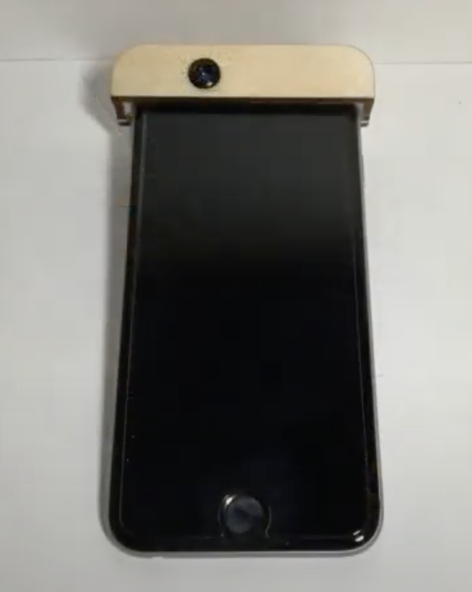
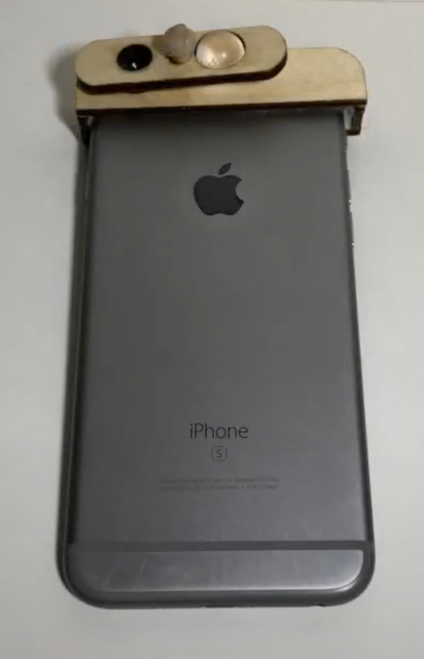
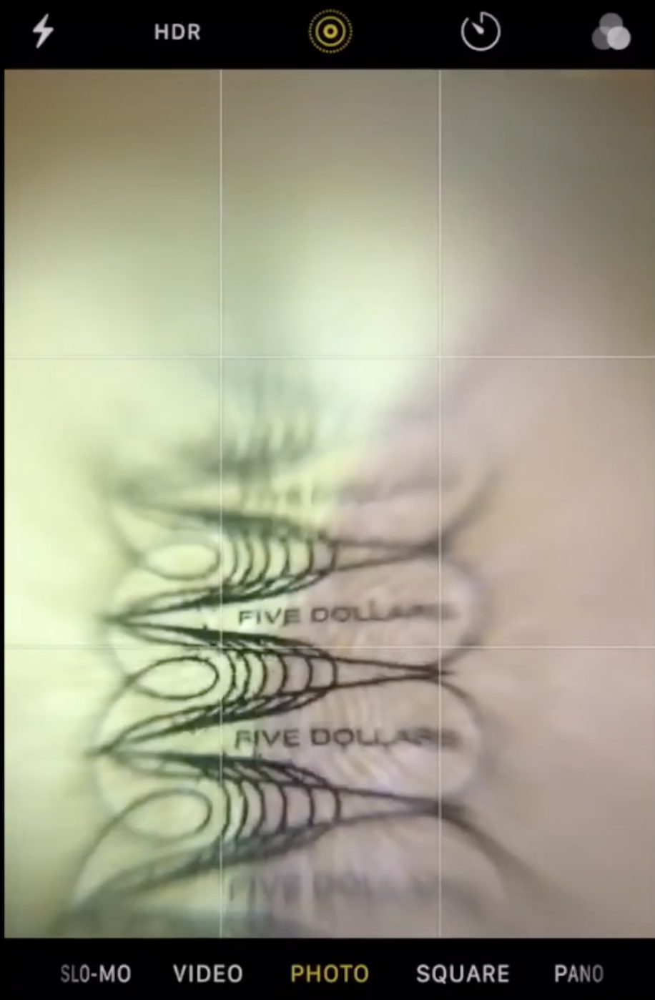
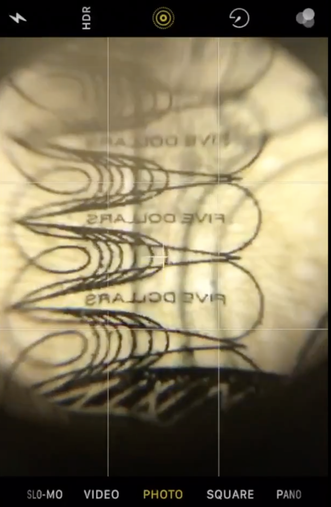

I made this iphone 6 microscope attachment during a summer camp.
I designed this keeping functionality, versatility, and simplicity
in mind. The front camera microscope is a biconvex lens attachment
and the back camera has both a ball lenses and the same biconvex
lens as the front. For the back camera, I added a function where
you can switch between two different lenses using a simple spinning
device. This gives the user a chance to easily choose which lens
best suits their needs. This prototype is cheap, portable, and easy
to use. It can be used more efficiently for medical and scientific
applications with higher quality lenses.
 






